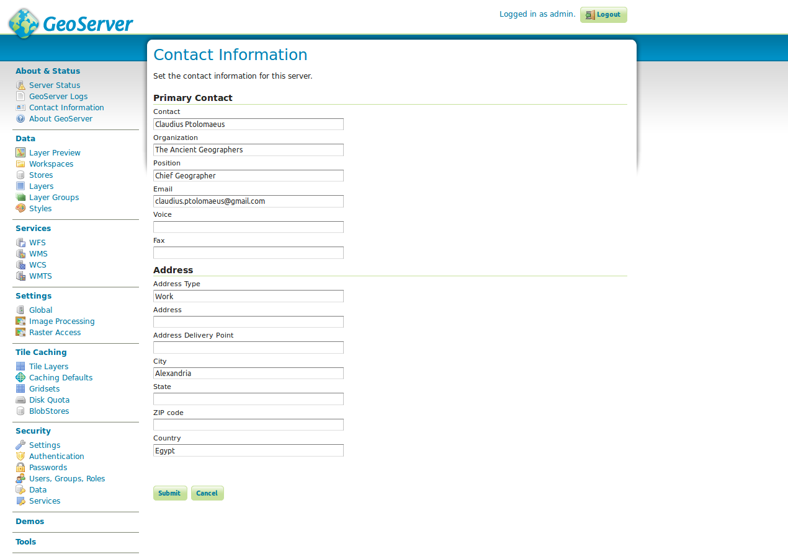

Server
Server Status

Under Server Status you can find information about the current state of the map server. In addition to various system specifications (e.g. available fonts, Java version used or memory currently in use), this includes installation specifics such as the currently used data directory. The status page is the first port of call if the performance of a layer does not match the usual speed or changes were made at the file level of GeoServer (e.g. installation of new fonts, changes in configuration files). Changes at file level are not recommended, but they cannot be prevented if, for example, the configuration of another GeoServer is adopted. In this case, the configuration must be set with the button Load new under Configuration and Catalog. If the user interface responds very sluggish or layers appear only very slowly in the application it can often be helpful to clear the resource cache with the button Clear and/or release the working memory via Free memory.
Logging

For any errors that can be clearly assigned to GeoServer (e.g. no or false response of a map server) the protocol is the first
point of contact. The GeoServer protocol can either be directly accessed via the GUI (see illustration above) or directly from the file system (/usr/local/lib/geoserver-2.22.2//logs/geoserver.log). If the error output is too short, you can change the length of the output using the field Maximum number of rows via the console.
The error output of Java/GeoServer is usually very detailed, so that the error-causing
component can be quickly located. Serious errors are usually designated with the abbreviation ERROR. For example, the error output
2014-10-06 09:16:33,492 ERROR [geoserver.wms] - Getting feature source: featureType: GEOSERVER:EXAMPLE_LAYER does not have a properly configured datastore
when retrieving the data source for a layer is caused by an uncleanly configured data store. This can either be caused by a false configuration or a failure of the source database, for example.
Hint: There are several protocol modes, each with a different sensitivity generating output. Further information in the section Settings.
Contact

The figure above shows the options for entering contact data in GeoServer, which are primarily relevant for the map services of the server, because they appear in the GetCapabilities document.
Task:
- Call the
GetCapabilitiesdocument of GeoServer. To do this, click WMS -> 1.3.0 on the start page on the right underService Capabilities. Please enter yourContact informationunder contact information. Call again theGetCapabilitiesdocument. What do you notice?